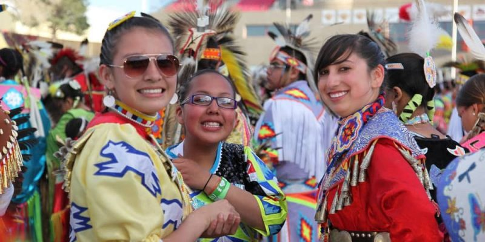
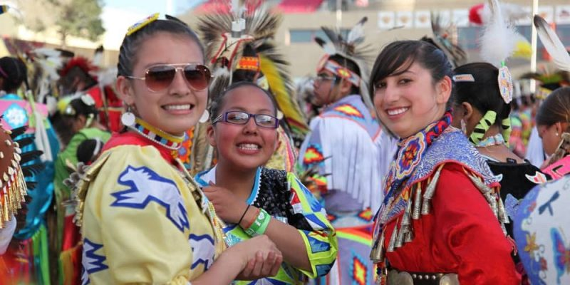

¿Qué es la diversidad digital?
La diversidad digital se refiere a la variedad y diferencias que existen en el acceso, uso y capacidades relacionadas con las tecnologías digitales, como internet, dispositivos electrónicos y plataformas digitales.
La diversidad digital se refiere a la variedad y diferencias que existen en el acceso, uso y capacidades relacionadas con las tecnologías digitales, como internet, dispositivos electrónicos y plataformas digitales.

Inclusión: Promueve la participación de todos los grupos sociales.
Innovación: La variedad de perspectivas y experiencias puede fomentar la creatividad y la innovación de soluciones digitales.
Acceso equitativo: Asegura que todos tengan acceso a las herramientas y recursos digitales.
Empoderamiento: Facilita el empoderamiento de comunidades marginadas.
Conexión social: Fomenta la creación de redes y relaciones entre diferentes grupos.
Desarrollo sostenible: Ayuda a abordar problemas locales mediante soluciones digitales adaptadas a las necesidades específicas de la comunidad.
Con este proyecto buscamos contribuir con el cumplimiento de los ODS, especialmente en el ámbito de la inclusión digital, la reducción de desigualdades y el acceso equitativo a las tecnologías.
 
